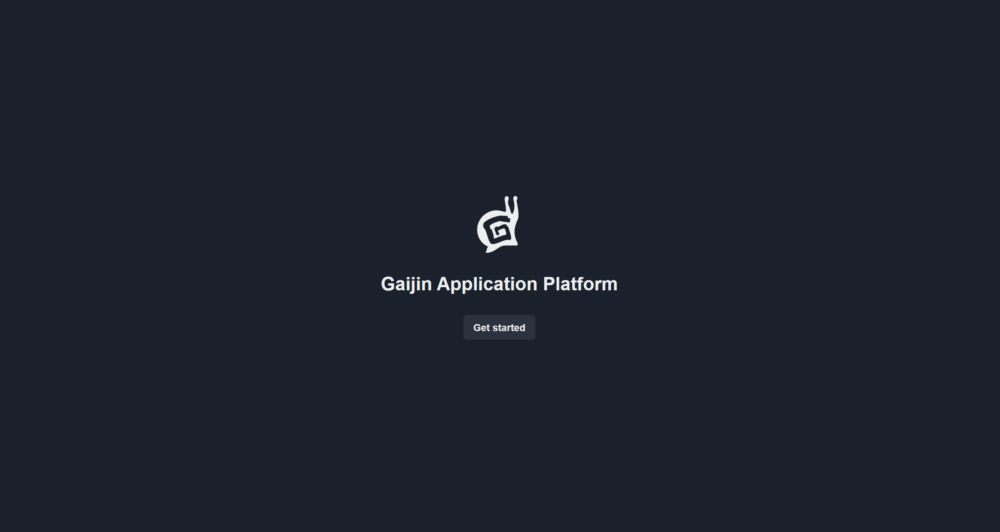
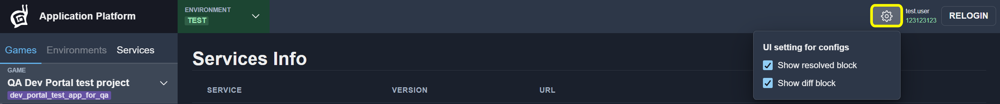
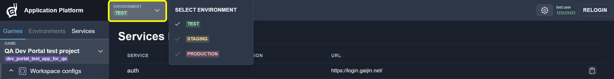
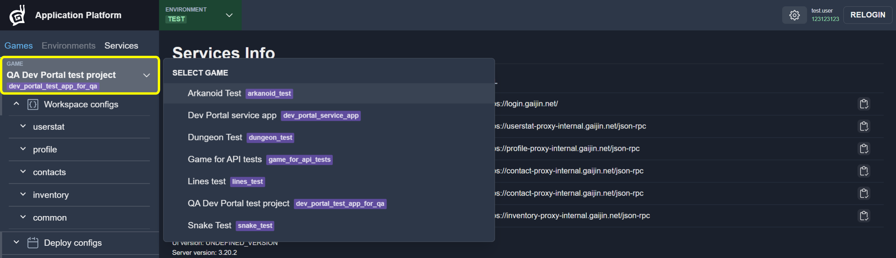
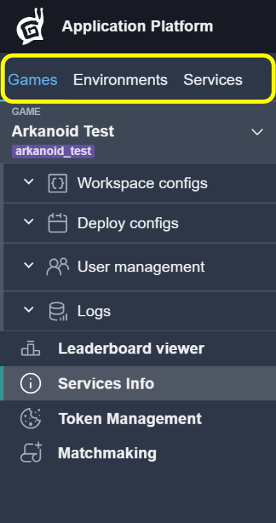

Interface Quick Tour
This section provides a brief introduction to the Dev Portal interface. It covers only the essential interface elements required to get started.
See also
For a complete and detailed description of all interface components and settings, see Dev Portal Interface.
Authentication Controls
To sign in to the portal, click the Get started button on the login page.
{kind=link}

If you need to authenticate again during your session, use the RELOGIN button in the top navigation bar.
{kind=link}
User data (nick and uid) is displayed to the left of the relogin button.
{kind=link}
UI Settings
The UI Settings menu is located to the left of the RELOGIN button. It allows you to control how configuration data is displayed in the interface.
{kind=link}

Available options include:
Show resolved block — Toggles the visibility of resolved configuration values.
See also
For more details, see Includes.
Show diff block — Controls whether configuration differences are displayed.
See also
For more details, see Show Differences.
Environment and Game Selection
Before working with configurations or services, select the appropriate context.
To change the active environment, use the Environment selector.
{kind=link}

To change the active game, use the Game selector.
{kind=link}

Workspaces
The Dev Portal interface is organized into workspaces, which can be accessed using tabs.
The following workspaces are available:
Games
Environments
Services — Manage and deploy service configurations across multiple deployment environments (circuits).
Select a workspace based on the type of resources you want to manage.
{kind=link}

{kind=link}